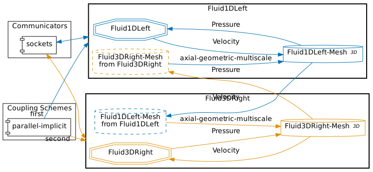
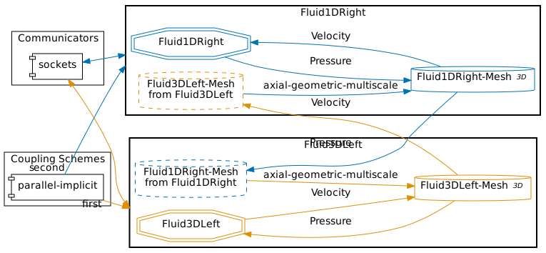
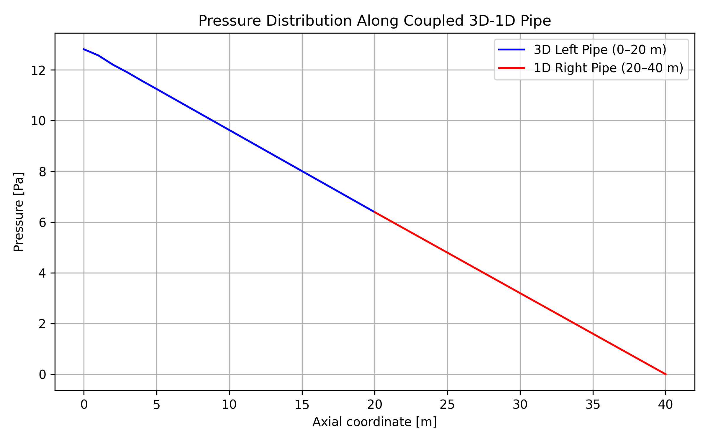
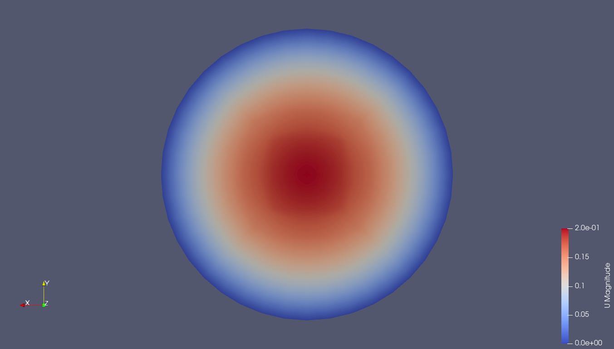

Setup
We solve a simple partitioned pipe problem using a 1D–3D coupling approach.
In this tutorial, the computational domain is split into two coupled regions: a 1D pipe section and a 3D pipe section.
The coupling is performed using preCICE.
In addition to the 1D–3D setup, this tutorial also includes configurations for 1D–1D and 3D–3D coupling.
These variants can be beneficial for validation studies, solver comparisons, or for investigating the influence of model dimensionality.
In the following, $\mathrm{1D}$ denotes the reduced-order domain (e.g., a Nutils solver) and $\mathrm{3D}$ denotes the full 3D CFD domain (e.g., OpenFOAM).
The problem consists of a straight pipe of length $L = 40 \mathrm{m}$ and diameter $D = 10 \mathrm{m}$. We partition the domain at $z_c = 20 \mathrm{m}$, where the coupling interface is located. The pipe axis is aligned with the z-axis.
The 1D domain solves the flow equations using Nutils, while the 3D domain is solved using OpenFOAM.
Both solvers are coupled via preCICE by exchanging the pressure and axial velocity at the interface.
Two coupling directions are possible:
- 1D → 3D: The 1D solver provides the interface velocity to the 3D solver, which responds with pressure.
- 3D → 1D: The 3D solver provides the velocity, and the 1D solver returns the pressure.
The global outlet (end of the rightmost domain) is set to $p_{\mathrm{out}} = 0 \mathrm{Pa}$.
For the 3D → 1D coupling, the 3D inlet velocity is prescribed as a parabolic (Poiseuille) profile with a bulk velocity of $u_{\mathrm{in}} = 0.1 \mathrm{m/s}$
implemented using a codedFixedValue boundary condition. This ensures a physically realistic velocity distribution consistent with the 1D model.
For the 1D → 3D coupling, the inlet velocity is set to $u_{\mathrm{in}} = 0.1 \mathrm{m/s}$.
Configuration
preCICE configuration for the 1D-3D simulation (image generated using the precice-config-visualizer):

preCICE configuration for the 3D-1D simulation:

Available solvers
- OpenFOAM (pimpleFoam). An incompressible/transient OpenFOAM solver. See the OpenFOAM adapter documentation.
- Nutils. A Python-based finite element framework. For more information, see the Nutils adapter documentation
Running the Simulation
First, select which coupling you want to run. This sets the correct precice-config.xml symlink (by default, set to 1d3d):
# Choose one configuration
./setcase.sh 1d3d
# or
./setcase.sh 3d1d
# or
./setcase.sh 1d1d
# or
./setcase.sh 3d3d
Open two terminals and start the corresponding participants for your chosen setup.
Example A — 1D → 3D coupling
Terminal 1:
cd fluid1d-left-nutils
./run.sh
Terminal 2:
cd fluid3d-right-openfoam
./run.sh
Example B — 3D → 1D coupling
Run ./setcase.sh 3d1d and then navigate to the respective directories.
Terminal 1:
cd fluid3d-left-openfoam
./run.sh
Terminal 2:
cd fluid1d-right-nutils
./run.sh
Visualization
The output of the coupled simulation is written into the folders fluid1d-left-nutils, fluid1d-right-nutils, fluid3d-left-openfoam, and fluid3d-right-openfoam, depending on which coupling direction (1d3d or 3d1d) you selected.
3D domain (OpenFOAM)
For the 3D participant, all simulation results are stored in the time directories inside the respective case folder (e.g., fluid3d-right-openfoam/).
You can visualize the flow field and pressure distribution using ParaView by opening the case file:
paraview fluid3d-right-openfoam/fluid3d-right-openfoam.foam
or, for the left domain if applicable:
paraview fluid3d-left-openfoam/fluid3d-left-openfoam.foam
Typical fields to inspect include:
p– pressureU– velocity
We also record pressure and velocity at fixed points each time step using the OpenFOAM probes function object.
Probe setup (excerpt):
#includeEtc "caseDicts/postProcessing/probes/probes.cfg"
fields (p U);
probeLocations
(
(0 0 20)
(0 0 40)
);
// For the left 3D domain use instead:
// probeLocations ((0 0 0) (0 0 20));
Output location:
fluid3d-right-openfoam/postProcessing/probes/0/pfluid3d-right-openfoam/postProcessing/probes/0/U
In addition to point probes, the 3D participant samples the axial pressure distribution along the pipe centerline using sampleDict. This provides the spatial pressure variation along the pipe and allows direct comparison with the 1D solution at the latest time step.
The tutorial includes a sampleDict in the 3D cases:
fluid3d-left-openfoam/system/sampleDictfluid3d-right-openfoam/system/sampleDict
sampleDict (excerpt):
FoamFile
{
version 2.0;
format ascii;
class dictionary;
location "system";
object sampleDict;
}
type sets;
libs ("libsampling.so");
setFormat raw;
sets
(
centerline
{
type uniform;
axis z;
start (0 0 0);
end (0 0 20);
nPoints 200;
}
);
fields (p);
The sampling is executed automatically during the run.
Output location:
postProcessing/sampleDict/<latestTime>/centerline_p.xy
The file contains two columns:
- axial coordinate
z - pressure
p
1D domain (Nutils)
The 1D solver writes a probes.txt with semicolon-separated time series:
time; p_in; u_in; p_out; u_out; p_mid; u_mid
where:
p_in,u_in→ pressure and velocity at the inlet of the 1D domainp_out,u_out→ pressure and velocity at the outlet of the 1D domainp_mid,u_mid→ pressure and velocity at the midpoint of the 1D domain
The 1D solver also writes a final_fields.txt with space-separated values:
x u p
They correspond to the axial position, velocity and pressure at the last time-step, i.e., at $t = 5 \mathrm{s}$.
Plotting axial pressure distribution (optional)
To reproduce the axial pressure distribution shown in the figure below, a helper script is provided:
python plot-pressure-distribution.py
By default, the script uses the 1d3d case.
You can also specify the coupling configuration explicitly:
python plot-pressure-distribution.py 1d3d
python plot-pressure-distribution.py 3d1d
python plot-pressure-distribution.py 1d1d
python plot-pressure-distribution.py 3d3d
Allowed cases are:
1d3d3d1d1d1d3d3d
Depending on the selected case, the script reads:
final_fields.txtfrom the 1D Nutils solvercenterline_p.xyfrom the 3D OpenFOAM participant
and combines both datasets to plot the pressure distribution along the coupled pipe.
By default, the figures are saved to:
images/pressure_distribution_<case>.png
Example visualization

Pressure along the pipe centerline. The pressure decreases nearly linearly from ≈12.8 Pa at the 3D inlet to 0 Pa at the 1D outlet, consistent with steady, laminar Poiseuille flow. The 3D (0–20 m) and 1D (20–40 m) sections connect smoothly at the coupling interface.

Parabolic velocity profile at the 3D outlet / coupling interface (z = 20 m).
The profile is Poiseuille-like with a bulk velocity of 0.1 m/s; consequently the centerline velocity is ≈ 0.2 m/s (≈ 2 × bulk) and vanishes at the wall (no-slip). This is the velocity state at the interface used for coupling to the 1D domain.